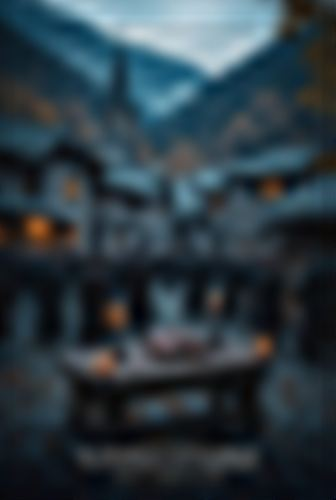
Lámina II
La lectura en la plaza
Ordal, un sábado de otoño. El pueblo entero, de pie, escuchando cómo se anota lo que debe cada uno.
Desbloquear 0,20 €Ilustraciones de escenas de cada libro. Aquí las ves veladas: eliges la que te llama, pagas por PayPal con el importe ya puesto y te envío la lámina sin velar al correo que me indiques, normalmente en pocas horas.
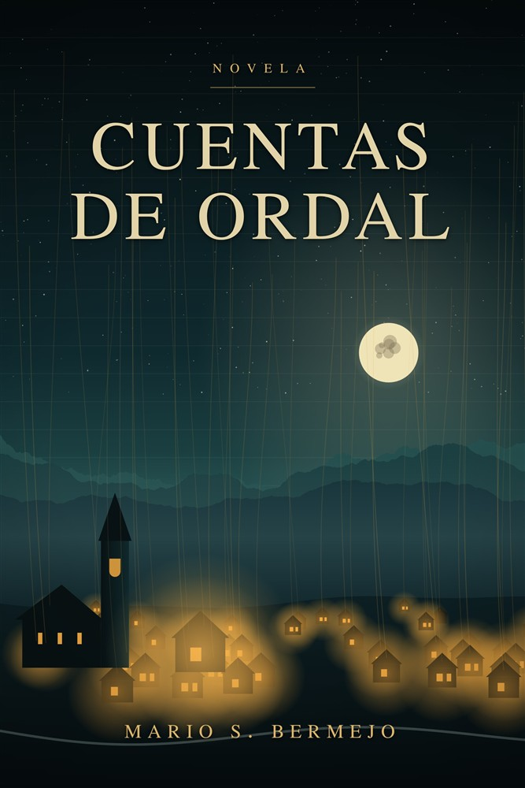
Lanzamiento el 25 de diciembre de 2026
Fantasía gótica de valle: un libro que anota quién paga cada favor. Diez de sus láminas están veladas aquí, a 0,20 € cada una. Las otras cinco (I, III, V, VII y IX) las ves sin velo en el anuncio del libro.

Lámina II
Ordal, un sábado de otoño. El pueblo entero, de pie, escuchando cómo se anota lo que debe cada uno.
Desbloquear 0,20 €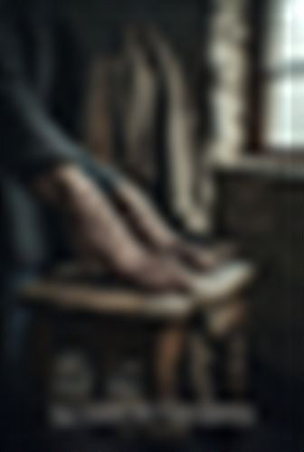
Lámina IV
Unas manos de anciana sobre un taburete de niña. Lo que el libro cobra no siempre se ve venir.
Desbloquear 0,20 €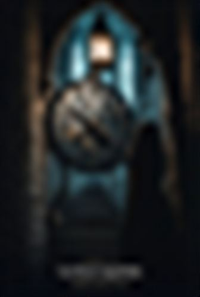
Lámina VI
Catalina atrasa la torre. Una escalera, un reloj enorme y una hora que se repite.
Desbloquear 0,20 €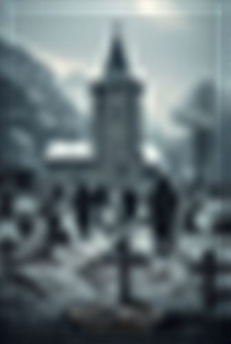
Lámina VIII
El entierro de Remedios. Nieve en el camposanto, un pueblo callado y nadie que quiera preguntar de qué murió.
Desbloquear 0,20 €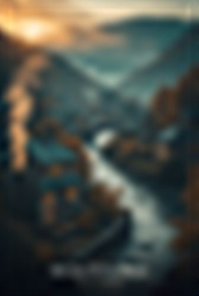
Lámina X
Humo al amanecer sobre la casa de la ribera. Alguien sigue encendiendo el fuego.
Desbloquear 0,20 €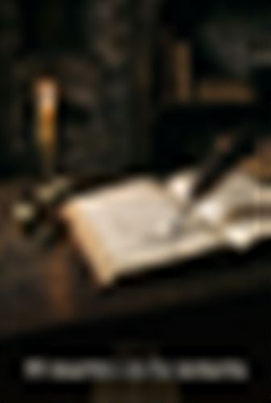
Lámina XI
Quien pide, firma. La pluma espera sobre la página, y una vela alumbra lo que está a punto de escribirse.
Desbloquear 0,20 €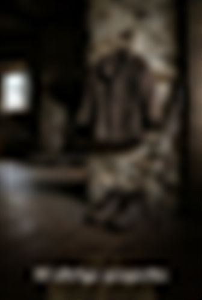
Lámina XII
Un abrigo de niño colgado, unas botas junto a la pared. Alguien aún espera en la casa.
Desbloquear 0,20 €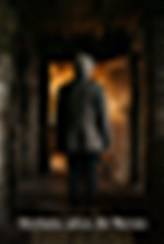
Lámina XIII
Inés guarda lo que nadie pregunta. Una puerta entreabierta, un manojo de llaves y treinta años de silencio.
Desbloquear 0,20 €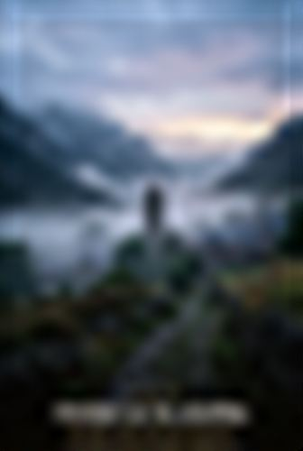
Lámina XIV
El valle, antes de que despierte. Un camino de piedra baja hacia el campanario.
Desbloquear 0,20 €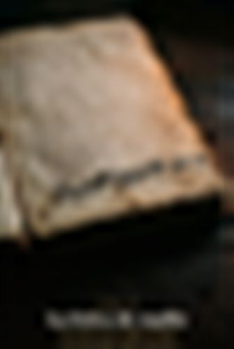
Lámina XV
Una línea que nadie escribió, firmada con una letra que no es de nadie.
Desbloquear 0,20 €Lanzamiento el 14 de febrero de 2027
Seis semanas, tres reglas y nada de enamorarse. Cinco láminas veladas de una novela a dos voces (+18), que se venden juntas: las 5 por 0,50 €.
Desbloquear las 5 por 0,50 €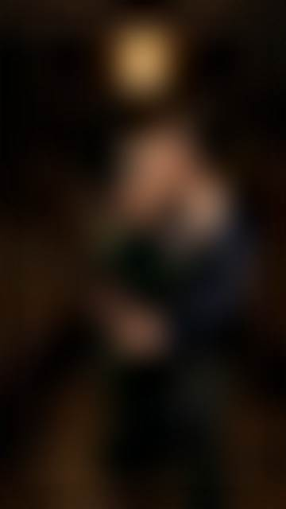
Lámina 1
El comedor vacío, la luz de una sola lámpara y un trato que ninguno de los dos sabe cumplir.
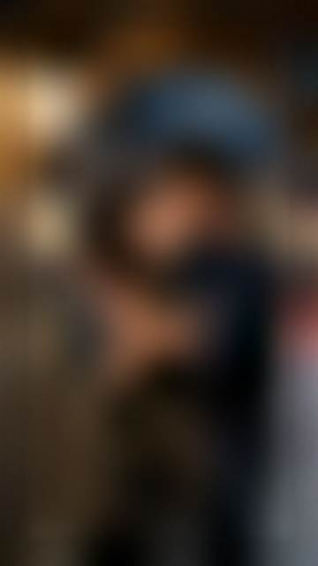
Lámina 2
Bajo el soportal, mientras llueve sobre la ciudad, las reglas empiezan a quedarse cortas.
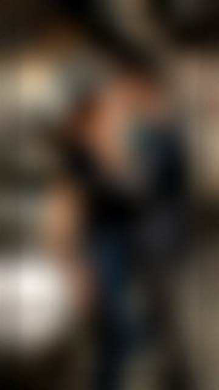
Lámina 3
Una mano en la mejilla, el delantal tirado sobre el taburete y la primera regla temblando.
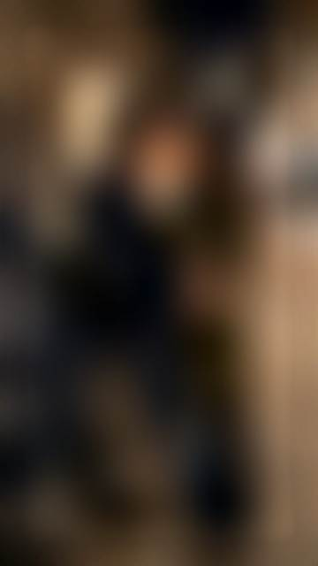
Lámina 4
Una calle de noche, un abrigo verde y una despedida que no acaba de serlo.
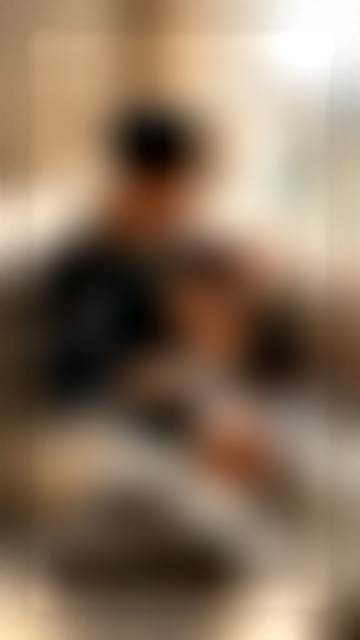
Lámina 5
Una manta, un sofá y la mañana entrando por la ventana. Dormirse juntos no estaba en el trato.
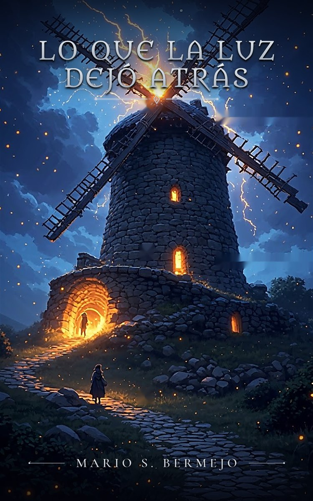
Lanzamiento en abril de 2027
Fantasía de pueblo, íntima y pausada: Clara vuelve a Vallormes y tiene que leer el eco de luz de su propia familia. Diez láminas veladas, a 0,50 € cada una.
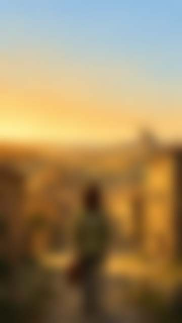
Lámina I
Quince años después, el camino sigue siendo el mismo. Ella, no.
Desbloquear 0,50 €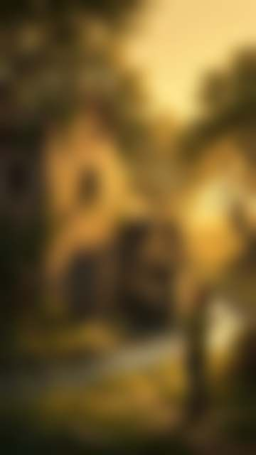
Lámina II
Entre los árboles, una rueda que lleva años sin girar. Todo el pueblo rodea este molino. Pregúntate por qué.
Desbloquear 0,50 €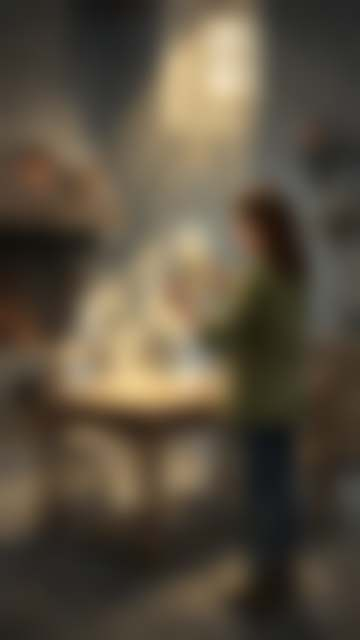
Lámina III
Con su placa en la mano, Clara lee lo que la luz guardó: quién se sentó a esta mesa, y qué se dijeron.
Desbloquear 0,50 €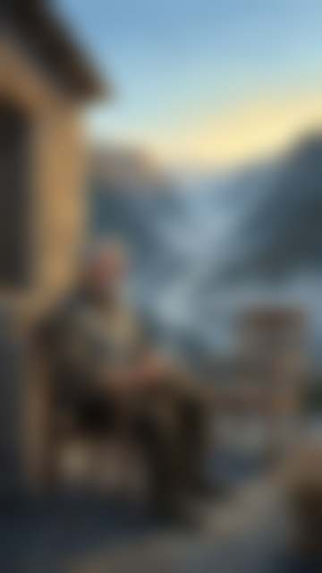
Lámina IV
Café caliente, el valle entre la niebla y una silla vacía a su lado. El hombre más fiable que Clara conoce.
Desbloquear 0,50 €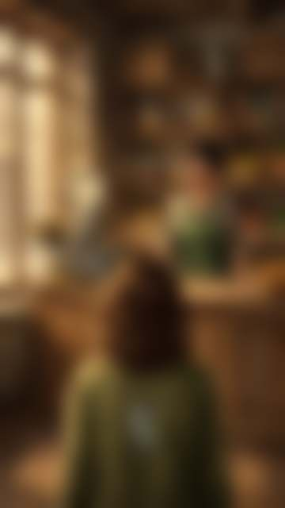
Lámina V
En un pueblo pequeño, comprar el pan es una forma de preguntar. Una sonrisa amable y una respuesta que nunca llega.
Desbloquear 0,50 €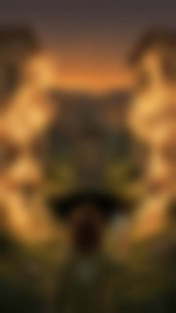
Lámina VI
Ecos de luz por todas partes, menos donde debería haber uno. A veces lo que falta pesa más que lo que se ve.
Desbloquear 0,50 €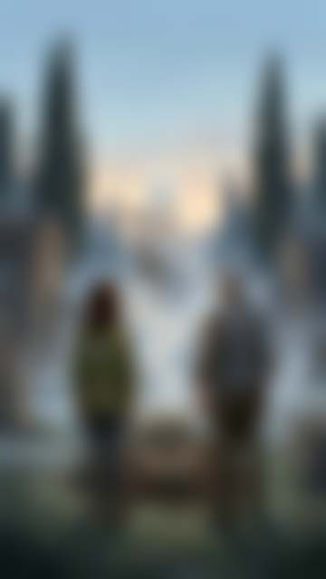
Lámina VII
Vino solo a enterrar a su abuela. La niebla del cementerio parece tener otros planes.
Desbloquear 0,50 €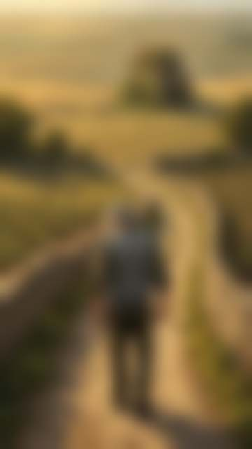
Lámina VIII
Cada vez que el camino pasa cerca del molino, Mateo da un rodeo. Esta vez, Clara se queda mirando por qué.
Desbloquear 0,50 €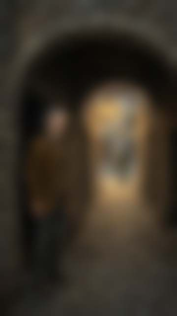
Lámina IX
Un callejón vacío, una farola encendida y alguien que espera en la sombra. Hay preguntas que se hacen mejor de noche.
Desbloquear 0,50 €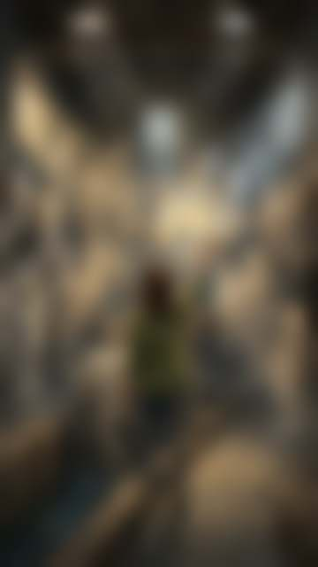
Lámina X
Cuando la placa se enciende, el molino se llena de vecinos que ya no están. Un secreto de veinte años sale a la luz.
Desbloquear 0,50 €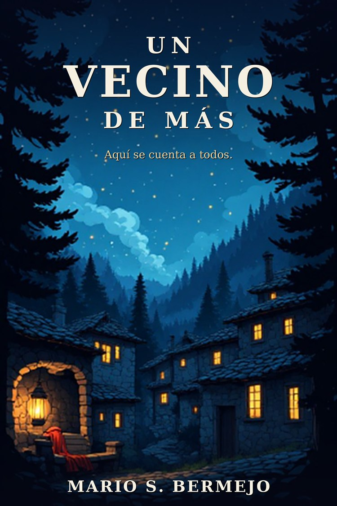
Próximamente · 2027
Terror rural de ritmo pausado: veintitrés vecinos, un pueblo de Soria y una cuenta que no sale. Diez láminas veladas, a 0,50 € cada una.
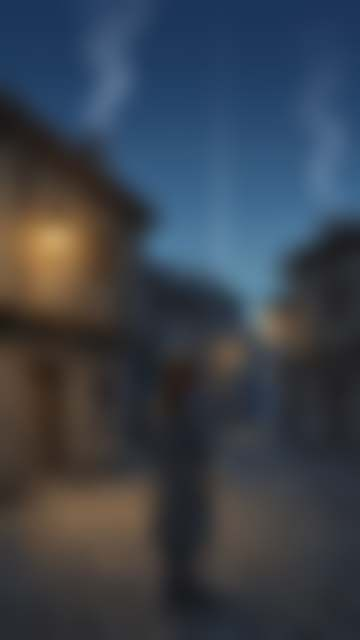
Lámina I
Llega de noche, con la carpeta del padrón bajo el brazo. Veintitrés vecinos, diecinueve chimeneas encendidas: haz la cuenta.
Desbloquear 0,50 €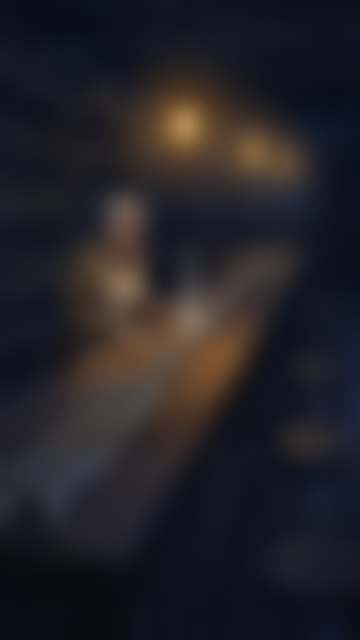
Lámina II
Una taza por vecino, cada una con su nombre pintado. Una de ellas está caliente, y su dueño no vive aquí.
Desbloquear 0,50 €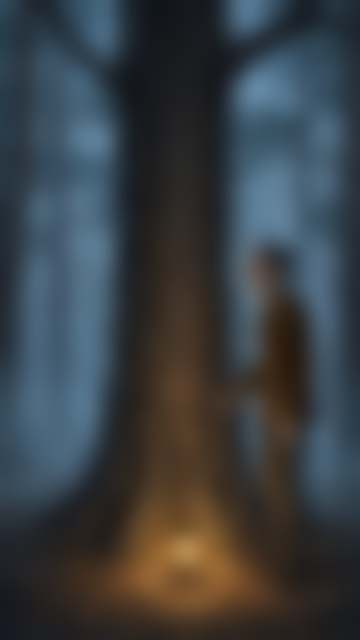
Lámina III
Veinticuatro marcas en la corteza, un farol en el suelo y un anciano que las cuenta en silencio. El pueblo solo reconoce veintitrés.
Desbloquear 0,50 €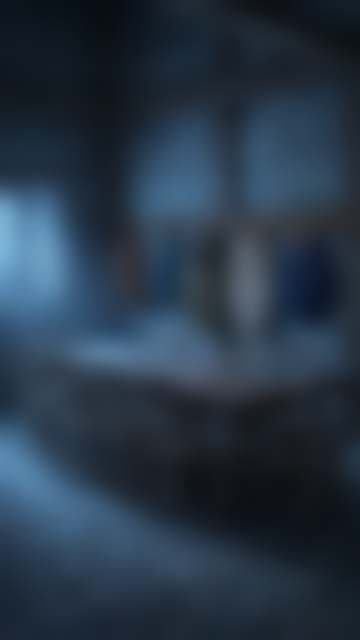
Lámina IV
Una mesa larga, sillas de sobra y abrigos colgados que nadie reclama. Alguien los cuelga cada noche.
Desbloquear 0,50 €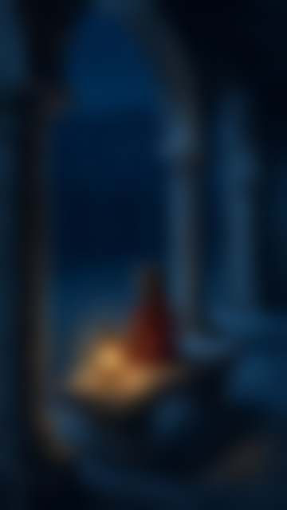
Lámina V
Una niña, un farol y un banco de piedra. En Navalsarda nadie está solo por casualidad.
Desbloquear 0,50 €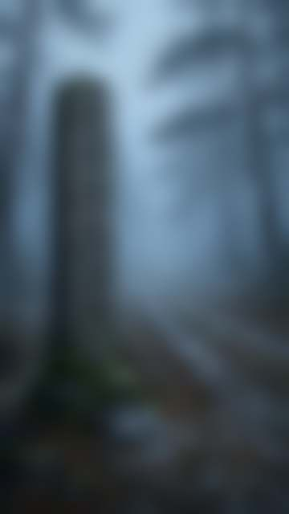
Lámina VI
Rayas de cuenta en la piedra, un par de zapatillas al pie del camino y la niebla pegada al suelo. Nadie quiere hablar de ellas.
Desbloquear 0,50 €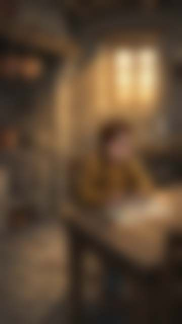
Lámina VII
Con sus pinturas de colores, dibuja uno por uno a todos los que viven en el pueblo. A todos.
Desbloquear 0,50 €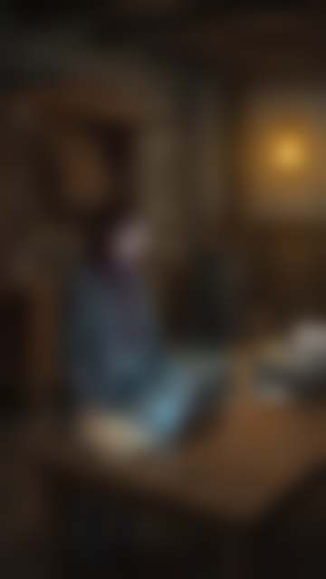
Lámina VIII
Sus fichas dicen que sobran catorce. Esta noche las revisa una por una, y las cuentas no salen.
Desbloquear 0,50 €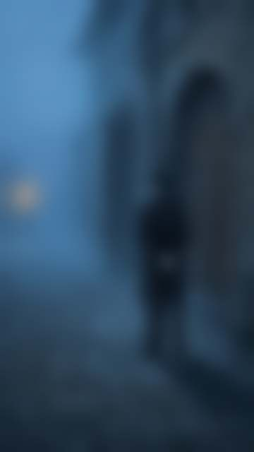
Lámina IX
Un hombre de espaldas, quieto ante la puerta del ayuntamiento. No hace ruido. No parece tener prisa.
Desbloquear 0,50 €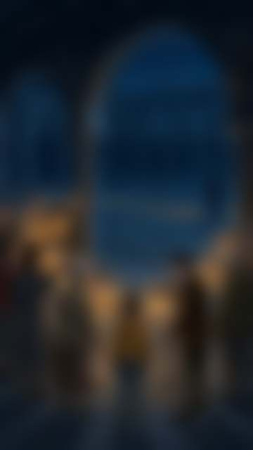
Lámina X
Todo el pueblo, con un farol en la mano, contándose en la plaza. Al fondo, una sombra que no entra en la cuenta.
Desbloquear 0,50 €¿Cómo funciona? Pulsas «Desbloquear», dejas tu correo y pagas por PayPal. En cuanto veo el pago, te mando la lámina a ese correo. Cada lámina es un trozo de la historia para quien quiera llevárselo. Volver a La Estantería Infinita.